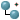

<div class="panel panel-default vbox">
    <!-- Commands -->
    <div class="panel-heading">  
        <div class="btn-group btn-group-xs" role="group" style="flex: 1;">
            <button class="btn btn-default" title="Create topConcept" (click)="createTopConcept()" [disabled]="!activeScheme">
                
            </button>
            <button class="btn btn-default" title="Add narrower" (click)="createNarrower()" [disabled]="!selectedConcept || !activeScheme">
                
            </button>
            <button class="btn btn-default" title="Delete Concept" (click)="deleteConcept()" [disabled]="!selectedConcept">
                
            </button>
        </div>
        
        <button class="btn btn-default btn-xs" title="Refresh" (click)="refresh()">
            <span class="glyphicon glyphicon-refresh"></span>
        </button>
    </div>
    
    <!-- Tree -->
    <div class="panel-body vbox">
        <concept-tree [scheme]="activeScheme" (nodeSelected)="onNodeSelected($event)"
            (nodeCtrlClicked)="onNodeCtrlClicked($event)" (conceptRemovedFromScheme)="onConceptRemovedFromScheme($event)">
        </concept-tree>
    </div>
    
</div>